Работает на базе программного обеспечения для оценки функционального состояния здоровья и стресс-трекинга “Лотос” и “Омега”


Стресс
Один из 4 ключевых столпов здоровья — питание, движение, сон, стресс.
Хронический стресс
увеличивает риск заболеваний в 2–5 раз. Без диагностики врач работает вслепую.
Влияет на гормональный баланс, уровень системного воспаления, адаптационные резервы.
Может искажать результаты лечения – без его учета терапия может быть неэффективной.
Спектральный анализ ВСР
– золотой стандарт оценки стресса в функциональной медицине

Вы не можете управлять тем, что не измеряете
Анализ вариабельности сердечного ритма (ВСР) – самый точный метод диагностики уровня стресса.
Стресс-трекер
инструмент для оценки и управления стрессом
Научно-обоснованный анализ ВСР
Оценка адаптивных резервов организма и уровня стресса
Визуализация динамики "до" и "после" терапии
Диагностика блуждаю его нерва – ключевого регулятора стресса
Определение противопоказаний к нагрузочным процедурам
Дистанционный мониторинг пациентов
Кейсы применения ВСР-анализа в практике специалистов
Метод анализа ВСР был разработан в космической и военной медицине, а теперь стал доступен для специалистов превентивной медицины
Технология анализа
Самый точный метод оценки стресса и регуляторных резервов

Оценка автономной нервной системы и тонуса блуждающего нерва.

Мгновенный спектральный анализ ВСР – отображение баланса симпатики и парасимпатики.
ВСР является маркером готовности организма к нагрузке и предиктором заболеваний.
Метод основан на аналитике R-R интервалов ЭКГ. Данные проходят сравнение с базой более
10 000 измерений.

Почему ВСР точнее других методов?

Кортизол-тест показывает лишь последствия стресса, но не его динамику.
Носимые устройства имеют высокую погрешность измерений.
Кому необходим объективный стресс-трекинг?
ВСР-анализ – это не просто диагностика, а инструмент прогнозирования состояния здоровья, персонализированного подхода и повышения эффективности терапии в различных областях медицины и здоровья.
Визуализация влияния стресса на организм
Какие данные показывают стресс-трекеры
ВСР-анализ – не просто инструмент диагностики стресса, а метод объективной оценки регуляторных систем организма.
Определение резервных возможностей организма.
Определение резервных возможностей организма.
Определение резервных возможностей организма.
Определение резервных возможностей организма.
Внедрите ВСР-анализ
в свою практику
Инструменты для стресс-менеджмента
Несколько уровней диагностических устройств
Стресс-трекер DCR-8
для частной практики или медицинского учреждения
от 89 000 р.
Стресс-трекер DCR-8
для частной практики или медицинского учреждения
Работает на базе программного
обеспечения Getpulse iOS
от 89 000 р.
Планшет для визуализации
результатов исследований
позволяет наглядно демонстрировать пациентам их состояние до и после вмешательств, повышая мотивацию и вовлеченность в процесс терапии.
от 89 000 р.

Сравнение версийНесколько уровней |
Гетпульспортативный прибор |
Лотоспрофессиональный прибор |
Омегамедицинский прибор |
|---|---|---|---|
| Анализ ВСР | |||
| Оценка стрессоустойчивости | |||
| Мониторинг динамики стресса |
Углубленно |
||
| Глубина анализа | Базовая | Продвинутая | С медицинской точностью |
| Диагностика блуждающего нерва | |||
| Возможность медицинского применения | |||
| Дыхательная тренировка | |||
| Многоканальный анализ | |||
| Стоимость | 15 000 руб. |
89 000 руб. |
179 000 руб. |
Что вы получаете при покупке устройства?
Устройство для стресс-менеджмента – ВСР-анализатор для объективной диагностики уровня стресса и регуляторных возможностей организма.
Доступ к вебинару “Основы стресс-менеджмента в превентивной медицине” – разбор методологии ВСР, интерпретации данных и внедрения в клиническую практику.
Определение резервных возможностей организма.
Определение резервных возможностей организма.